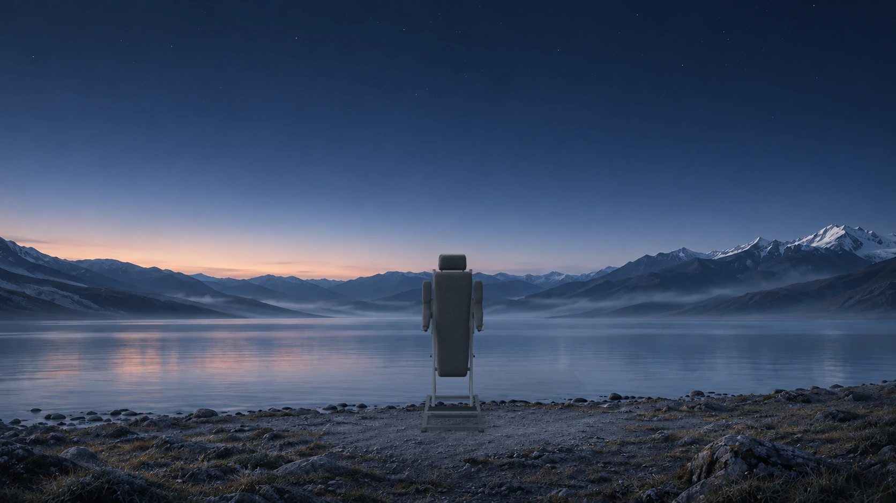
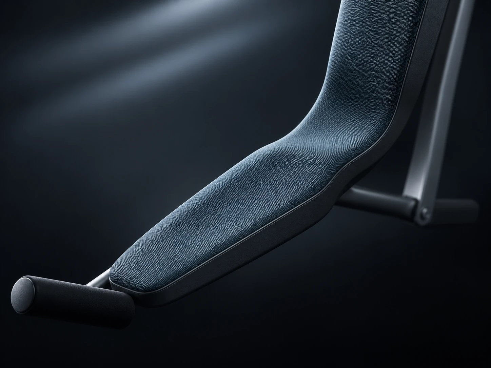
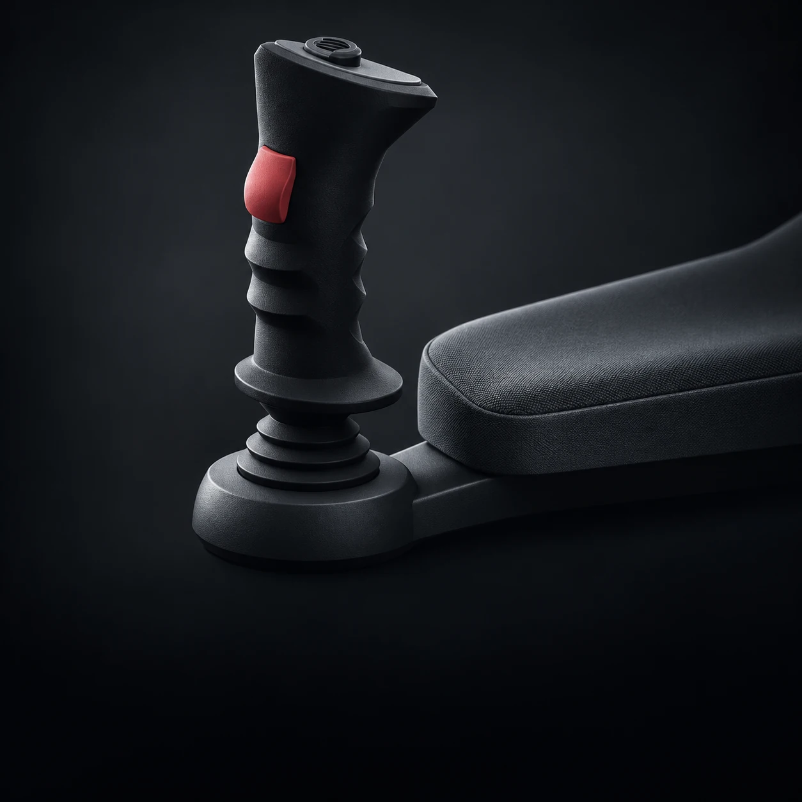
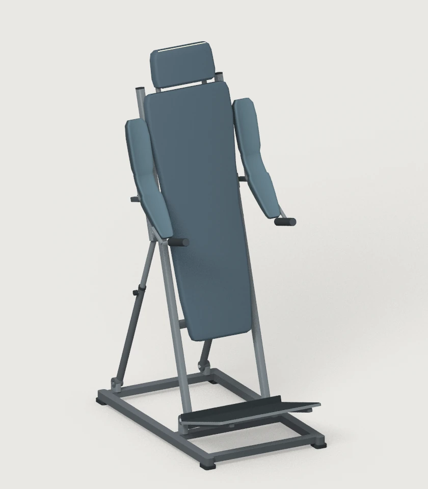

Ближе к звёздам.
Стойка для наблюдения за ночным небом.
Устройство
Площадка под ногами.
Мягкая опора за спиной.
Площадка под обе стопы наклоняется вместе со спинкой и сохраняет с ней угол 90°. У Lite по бокам расположены ручки. У Pro и X на мягкую опору можно положить всю руку от плеча до кисти.

От плеча до ладони
Мягкая опора Startrack Pro огибает локоть и сужается к запястью.

Управление X
Два джойстика под ладонями управляют наклоном и разворотом.
Версии
Три версии
Startrack.
Выберите версию, чтобы рассмотреть опору для рук и сравнить способы регулировки.
Регулируемая опора для рук
В узком положении подушки почти вплотную подходят к спинке. Каждую опору можно поднять или отодвинуть вбок вместе с рукояткой.

FAQ
Вопросы
и ответы.
Как пользоваться стойкой?
Разместите обе стопы на площадке и обопритесь на спинку. В Pro и X мягкие боковые опоры поддерживают руки. При тестировании команда поможет подобрать положение спинки.
Как регулируется наклон?
У Lite и Pro угол спинки задают задние распорки с фиксаторами. У X правый джойстик регулирует продольный наклон от 15 до 20°, а левый задаёт боковой наклон и разворот до 90° в каждую сторону.
Можно ли опустить руки в версии X?
Да. В рабочей посадке предплечье лежит на подлокотнике, кисть находится у джойстика. Для отдыха нижнюю секцию можно опустить вдоль спинки и распрямить руку. Левая и правая стороны регулируются отдельно.
На какой рост и вес рассчитана стойка?
Сейчас это прототип. Допустимую нагрузку, устойчивость и диапазон роста предстоит подтвердить испытаниями. Возможность участия команда уточнит до встречи.
Как попасть на тестирование?
Отправьте запрос с именем, городом и интересующей версией. Когда появится подходящий прототип и площадка, команда сможет согласовать с вами условия по почте.
Тестирование